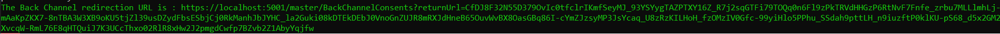

Confidential Client uses CIBA
According to the specification, Public Client cannot use Client-Initiated Backchannel Authentication(CIBA). Only Confidential Client can use it, For example a Console Application, Website or a REST.API.
In this tutorial, we are going to explain how to create a Console Application. It will initiate a CIBA Authentication Request and will get an Access Token by polling the Token endpoint.
Source Code
The source code of this project can be found here.
Add a client
The first step consists to configure the OPENID client
- Open the IdentityServer website http://localhost:5002.
- In the Clients screen, click on
Add clientbutton. - Select
Deviceand click on next.

- Fill-in the form like this and click on the
Savebutton to confirm the creation.

- Navigate to the
Certificate Authorities, click on theCertificate Authoritythat you are interested to createClient Certificate. The Certificate Authority MUST be trusted by your machine, don't forget to import it into the appropriate store.

- Click on
Client Certificatestab and click on theAdd Certificate Clientbutton. - Fill-in the form like this and click on
Addbutton.

- Click on the Settings button next to the Client Certificate and click on
Download. The certificate will be used later inside the Console Application.

Create a console application
The last step consists to create and configure a Console Application project.
- Open a command prompt, run the following commands to create the directory structure for the solution.
mkdir DeviceUseCIBA
cd DeviceUseCIBA
mkdir src
dotnet new sln -n DeviceUseCIBA
- Create a console application named
ConsoleAppand install theIdentityModelNuget Package
cd src
dotnet new console -n ConsoleApp
cd ConsoleApp
dotnet add package IdentityModel
- Add the
ConsoleAppproject into your Visual Studio solution.
cd ..
dotnet sln add ./src/ConsoleApp/ConsoleApp.csproj
- Edit the
Program.csfile and copy the following code.
using IdentityModel.Client;
using System.Security.Authentication;
using System.Security.Cryptography.X509Certificates;
var certificate = new X509Certificate2(Path.Combine(Directory.GetCurrentDirectory(), "CN=client.pfx"));
var req = new BackchannelAuthenticationRequest()
{
Address = "https://localhost:5001/master/mtls/bc-authorize",
ClientId = "cibaConformance",
Scope = "openid profile",
LoginHint = "user",
BindingMessage = "Message",
RequestedExpiry = 200
};
var handler = new HttpClientHandler();
handler.ServerCertificateCustomValidationCallback = (message, cert, chain, errors) => { return true; };
handler.CheckCertificateRevocationList = false;
handler.ClientCertificateOptions = ClientCertificateOption.Manual;
handler.SslProtocols = SslProtocols.Tls12;
handler.ClientCertificates.Add(certificate);
var client = new HttpClient(handler);
var response = await client.RequestBackchannelAuthenticationAsync(req);
bool cont = true;
while(cont)
{
var tokenResponse = await client.RequestBackchannelAuthenticationTokenAsync(new BackchannelAuthenticationTokenRequest
{
Address = "https://localhost:5001/master/mtls/token",
ClientId = "cibaConformance",
AuthenticationRequestId = response.AuthenticationRequestId
});
if(tokenResponse.IsError)
Console.WriteLine(tokenResponse.Error);
else
{
Console.WriteLine(tokenResponse.AccessToken);
cont = false;
}
}
- Replace the
CN=client.pfxcertificate by the one you have downloaded.
When you run the application, a green message will be displayed in the Identity Server instance.
Copy the URL in the browser and authenticate with the credentials login : user, password: password.

When the consent is granted then the access token will be displayed by the console application.